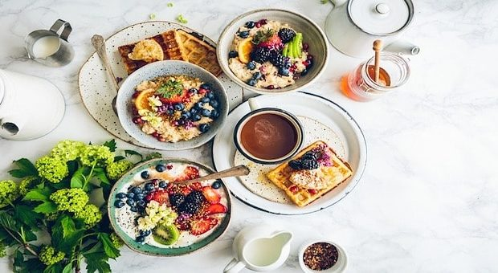

Colazioni dal mondo
Dimmi che colazione fai e ti dirò chi sei!
La colazione rappresenta i diversi modi di dire ‘’buongiorno’’ in ogni parte del mondo, assecondando tradizioni, abitudini e preparazioni molto diverse tra loro . Di seguito verranno elencate alcune delle numerose varietà di colazione, facendo una selezione tra le scelte dolci e quelle salate.
Colazione dolce
La colazione dolce si avvicina di più alla cultura italiana tipica per caffè e brioche, molto simile anche in Francia. La colazione svedese prevede invece un tipico pancake chiamato Pannkakor, mentre alle Hawaii una grande varietà di frutta, ogni tanto accompagnata da un paio di bagel.